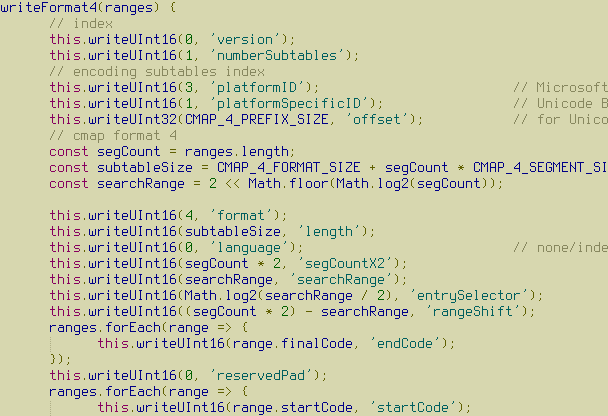

Matrices and Row Operations
Table of Contents
Augmented matrix, Coefficient matrix, Elementary row operations, Row equivalence, SymPy
Matrices in General
Matrices have a reputation for being a tad daunting. They're usually the first things we come in contact with in a slightly more "abstract math" setting and after years in the familiar domain of differential and integral calculus.
But matrices are very simple mathematical objects: a matrix is just a rectangular grid of things. It's doesn't matter terribly what those "things" are, but we'll almost exclusively be interested in the case that those things are real numbers.1
Example. Bitmap fonts represent characters as matrices of bits. When a bit is 1 in the matrix for a given character, the pixel is "activated". Here is an example of Terminus Font, in which each letter is represented as matrix with 16 rows and 8 columns.2

The number "3", for example, is represented by the following matrix (with \(1\) rendered as \(\blacksquare\)).
\begin{bmatrix} 0 & 0 & 0 & 0 & 0 & 0 & 0 & 0 \\ 0 & 0 & 0 & 0 & 0 & 0 & 0 & 0 \\ 0 & \blacksquare & \blacksquare & \blacksquare & \blacksquare & \blacksquare & \blacksquare & 0 \\ \blacksquare & 0 & 0 & 0 & 0 & 0 & 0 & \blacksquare \\ \blacksquare & 0 & 0 & 0 & 0 & 0 & 0 & \blacksquare \\ 0 & 0 & 0 & 0 & 0 & 0 & 0 & \blacksquare \\ 0 & 0 & \blacksquare & \blacksquare & \blacksquare & \blacksquare & \blacksquare & 0 \\ 0 & 0 & 0 & 0 & 0 & 0 & 0 & \blacksquare \\ 0 & 0 & 0 & 0 & 0 & 0 & 0 & \blacksquare \\ \blacksquare & 0 & 0 & 0 & 0 & 0 & 0 & \blacksquare \\ \blacksquare & 0 & 0 & 0 & 0 & 0 & 0 & \blacksquare \\ 0 & \blacksquare & \blacksquare & \blacksquare & \blacksquare & \blacksquare & \blacksquare & 0 \\ 0 & 0 & 0 & 0 & 0 & 0 & 0 & 0 \\ 0 & 0 & 0 & 0 & 0 & 0 & 0 & 0 \\ 0 & 0 & 0 & 0 & 0 & 0 & 0 & 0 \\ 0 & 0 & 0 & 0 & 0 & 0 & 0 & 0 \\ \end{bmatrix}See also this page.
A matrix is like a list of lists in Python (and we will, in essence,
represent them that way) with the restriction that every inner list
is the same length. We also usually require that matrices have the
same "kind" of things in it, i.e., no mixtures of string and
bool entries, or float and int entries.
Example. The list of lists
A = [ [ 1, 2, 3 ], [ 4, 5, 6 ], [ 7, 8, 9 ] ]in Python correctly represents a matrix whereas
A = [ [ 1, 2, 3 ], [ 4, 5 ], [ 6, 7, 8 ] ] B = [ [1, true, 1] [1, 1, 1] ]do not.
A matrix is, therefore, characterized by how many rows it has, how many columns it has, and what sort of things it contains. We will write \(\mathbb R^{m \times n}\) to refer to the collection of matrices with \(m\) rows and \(n\) columns whose entries are real numbers.
Example.
\(\begin{bmatrix} 3 & -2 & \pi \\ 0.1 & 4 & 1000 \end{bmatrix}\)
is a \(2 \times 3\) matrix with real entries, i.e., it is a matrix in \(\mathbb R^{2 \times 3}\).
I want to again emphasize that matrices have no inherent meaning. They are just a convenient way to store data. The "meaning" of a matrix comes from how we work with it, how we interpret it. As you might expect, it will turn out to be incredibly useful to represent systems of linear equations as matrices.
Matrices for Linear Systems
The benefits of representing systems of linear equations as matrices are twofold:
- we'll be working with linear systems quite a bit, and it gets exhausting to write all syntactic noise of the "+" signs, the "=" sign, the variables names (the names don't really matter anyway)
- matrices are simple, and can be more easily be represented in a computer program (e.g., as a list of lists).
The process of turning a linear system into matrix is straightforward: just drop "+" signs, the "=" sign, and the variables, and write everything that remains in a grid. As you may have gathered from above, we usually use square brackets notation for matrices.
Example. The system of linear equations
\begin{align*} 3x_1 + 2x_2 - 3x_3 &= 4 \\ (-2)x_2 + x_4 &= 10 \\ 11x_1 + 11x_2 - x4 &= -1 \\ \end{align*}can be represented by the matrix
\begin{bmatrix} 3 & 2 & -3 & 0 & 4 \\ 0 & -2 & 0 & 1 & 10 \\ 11 & 11 & 0 & -1 & -1 \end{bmatrix}keeping in mind that each equation in a linear system is an equation in the same variables (in this case \(x_1\), \(x_2\), \(x_3\), and \(x_4\)) and so we need to add \(0\) coefficients in some cases.
This matrix is called the augmented matrix of the system. We will occasionally also be interested in the coefficient matrix, which drops the last column.
\begin{bmatrix} 3 & 2 & -3 & 0 \\ 0 & -2 & 0 & 1 \\ 11 & 11 & 0 & -1 \end{bmatrix}
I again again what to emphasize that this matrix is just a way of organizing the data of a linear system. Part of the game we're playing is in defining operations on matrices which correspond to useful operations on linear systems.3
Hopefully this is enough to get us started. Out of plain duty (and general intellectual betterment) here's the formal definition, which says the same thing as above, but in the correct "mathy" style.
Definition. The augmented matrix of a linear system
\begin{align*} a_{11}x_1 + \dots + a_{1n} x_n &= b_1 \\ a_{21}x_1 + \dots + a_{2n} x_n &= b_2 \\ &\vdots \\ a_{m1}x_1 + \dots + a_{mn} x_n &= b_m \end{align*}with \(m\) equations and \(n\) unknowns is the \(m \times (n + 1)\) matrix
\begin{bmatrix} a_{11} & \dots & a_{1n} & b_1 \\ a_{21} & \dots & a_{2n} & b_2 \\ \vdots & \ddots & \vdots & \vdots \\ a_{m1} & \dots & a_{mn} & b_m \end{bmatrix}and the coefficient matrix of the same system is the \(m \times n\) matrix
\begin{bmatrix} a_{11} & \dots & a_{1n}\\ a_{21} & \dots & a_{2n} \\ \vdots & \ddots & \vdots \\ a_{m1} & \dots & a_{mn} \end{bmatrix}
Exercise. Write the augmented matrix for the following system of linear equations.
\begin{align*} x_1 + x_2 + x_3 &= 13 \\ x_1 - x_4 + x_5 &= -2 \\ x_2 + 3x_3 &= 1 \\ (-3)x_3 - x_4 &= 2 \end{align*}
Example. In chemistry, we learn about chemical reactions like the following:
\[ \mathsf{C}_6\mathsf{H}_{12}\mathsf{O}_6 \longrightarrow \mathsf{C}_2\mathsf{H}_5\mathsf{OH} + \mathsf{CO}_2 \]
This equations expresses that glucose (sugar) can be converted to ethanol (alcohol) and carbon-dioxide (by fermentation). This equation is unbalanced because the numbers of each kind of atom on each side of the equation don't match (e.g., there are 6 carbon atoms on the left-hand side and 3 on the right-hand side). The process of balancing this chemical equation is determinings (positive integer) values \(x_1\), \(x_2\), and \(x_3\) for the equation
\[ x_1\mathsf{C}_6\mathsf{H}_{12}\mathsf{O}_6 \longrightarrow x_2\mathsf{C}_2\mathsf{H}_5\mathsf{OH} + x_3\mathsf{CO}_2 \]
so that the number of each atom is conserved. For example, for carbons, we need that
\[ 6x_1 = 2x_2 + x_3 \]
or, put into a more familiar form,
\[ 6x_1 - 2x_2 - x_3 = 0 \]
Doing this also for hydrogen and oxygen, we get
\begin{align*} 6x_1 - 2x_2 - x_3 &= 0 \\ 12x_1 - 6x_2 &= 0 \\ 6x_1 - x_2 - 2x_3 &= 0 \\ \end{align*}which has the augmented matrix
\begin{bmatrix} 6 & -2 & - 1 & 0 \\ 12 & -6 & 0 & 0 \\ 6 & -1 & -2 & 0 \end{bmatrix}We haven't yet set up the machinery to solve this linear system (it has more than one solution), but we'll come back to it.
Row Operations
One of the important observations that we made in the previous chapter was that, when we solve a system of linear equations using the elimination method, we're generating a sequence of linear systems with identical solution sets. Let's create some terminology for this.
Terminology. Two systems of linear equations are equivalent if they have the same solution set.
Using the elimination method, we tranform our linear system into an equivalent system which "represents a solution". In the case of a system with a unique solution, this would be a system of the form
\begin{align*} x_1 &= b_1 \\ x_2 &= b_2 \\ &\vdots \\ x_n &= b_n \\ \end{align*}The point \((b_1, b_2, \dots, b_n)\) in \(\mathbb R^n\) is the only solution to the above (trivial) linear system, so if our initial system is equivalent to it, it must also have the unique solution \((b_1, b_2, \dots, b_n)\).
It would be useful if we could then characterize the kinds of operations that we performed on linear systems as operations on matrices. That way, we can better codify the process that we used.
If we look back at the process we took when using the elimination method, there were two operations that we needed:
- (scaling) we had to multiply an equation in a linear system by a real number
- (replacement) we had to add some multiple of an equation to another
We used these steps to isolate variables and eventually solve the system.
Aside. We should convince ourselves that these operations produce equivalent linear systems.
In the case of scaling, it's sufficient to note that multiplying a single linear equation by a number does not change its solution set. For example if \((s_1, s_2, s_3)\) in \(\mathbb R^3\) has the property that
\begin{align*} 2s_1 + 3s_2 + s_3 = 4 \end{align*}(as in the case of \((1, 1, -1)\)) then it also has the property that
\begin{align*} -6s_1 - 9s_2 - 3s_3 = -12 \end{align*}(as, again, in the case of \((1, 1, -1)\)) since
\begin{align*} -6s_1 - 9s_2 - 3s_3 &= -3(2s_1 + 3s_2 + s_3) \\ &= -3(4) \\ &= -12 \end{align*}
Exercise. Convince yourself that replacement always produces an equivalent linear system, using a similar argument to the one above.
It turns out that these are the only operations we need to characterize the equivalence of linear systems. And they can be naturally defined as matrix operations called elementary row operations on the augmented matrix of a system.
Before formalizing this, let's see what this looks like in a concrete setting.
Example. Let's consider the system and augmented matrix
\begin{matrix} \begin{align*} x + 2y &= 1 \\ -x - y - z &= -1 \\ 2x + 6y - 3z &= 1 \end{align*} & \qquad & \begin{bmatrix} 1 & 2 & 0 & 1 \\ -1 & -1 & -1 & -1 \\ 2 & 6 & -3 & 1 \end{bmatrix} \end{matrix}In solving this system using the elimination method, we first eliminate the appearance of \(x\) in the second equation by adding the first equation to the second equation. As far as how this changes the augmented matrix, this is an example of replacement, where we add the first row element-wise to the second row. We call this a row operation.
\begin{matrix} \begin{align*} x + 2y &= 1 \\ y - z &= 0 \\ 2x + 6y - 3z &= 1 \end{align*} & \qquad & \begin{bmatrix} 1 & 2 & 0 & 1 \\ 0 & 1 & -1 & 0 \\ 2 & 6 & -3 & 1 \end{bmatrix} \end{matrix}We then add \(-2\) times the first equation to the second equation to eliminate \(x\) from the third equation, another instance of replacement in the augmented matrix:
\begin{matrix} \begin{align*} x + 2y &= 1 \\ y - z &= 0 \\ 2y - 3z &= -1 \end{align*} & \qquad & \begin{bmatrix} 1 & 2 & 0 & 1 \\ 0 & 1 & -1 & 0 \\ 0 & 2 & -3 & -1 \end{bmatrix} \end{matrix}We then add \(-2\) times the second equation to the third equation to eliminate \(y\) from the third equation:
\begin{matrix} \begin{align*} x + 2y &= 1 \\ y - z &= 0 \\ -z &= -1 \end{align*} & \qquad & \begin{bmatrix} 1 & 2 & 0 & 1 \\ 0 & 1 & -1 & 0 \\ 0 & 0 & -1 & -1 \end{bmatrix} \end{matrix}We then multiply the last equation by \(-1\) so that we can get \(z = 1\):
\begin{matrix} \begin{align*} x + 2y &= 1 \\ y - z &= 0 \\ z &= 1 \end{align*} & \qquad & \begin{bmatrix} 1 & 2 & 0 & 1 \\ 0 & 1 & -1 & 0 \\ 0 & 0 & 1 & 1 \end{bmatrix} \end{matrix}This completes the elimination phase. We can then substitute \(z\) into the second equation, which is equivalent to adding the third equation to the second equation:
\begin{matrix} \begin{align*} x + 2y &= 1 \\ y &= 1 \\ z &= 1 \end{align*} & \qquad & \begin{bmatrix} 1 & 2 & 0 & 1 \\ 0 & 1 & 0 & 1 \\ 0 & 0 & 1 & 1 \end{bmatrix} \end{matrix}And we can substitute the newly gotten value of \(y\) into the first equation, which is equivalent to adding \(-2\) times the second equation to the first equation.
\begin{matrix} \begin{align*} x &= -1 \\ y &= 1 \\ z &= 1 \end{align*} & \qquad & \begin{bmatrix} 1 & 0 & 0 & -1 \\ 0 & 1 & 0 & 1 \\ 0 & 0 & 1 & 1 \end{bmatrix} \end{matrix}
Verify that \((-1, 1, 1)\) is a solution to the linear system in the previous example.
In the entire process of the previous example, we only needed to be able to scale rows and replace rows. Moving forward we'll stop thinking directly in terms of linear equations (i.e., the left-hand column in the previous example) and work entirely in the context of matrices, applying row operations to transform one matrix into another which "represents a solution".
In the case of a unique solution, we get a first hint at what this "final" matrix is, it's a square matrix with a diagonal of \(1\) entries, along with a column appended to the right which has the values assigned to each variable. In a later chapter, when we discuss Gaussian Elimination, we'll broaden our view on what this "final" matrix can be so that we can account for no solutions or infinitely many solutions.
Let's formalize what we just covered with a definition. To the elementary row operations, we add an operation called interchange which allows us to swap rows. This is just a convenience (see the exercise below for more details).
Definition. The elementary row operations are
Name Notation4 Description Replacement Rᵢ(A) ← Rᵢ(A) + c * Rⱼ(A)n add row j scaled by c to row i elementwise Scaling Rᵢ(A) ← c * Rᵢ(A) multiply every entry in the row i c Interchange Rᵢ(A) ↔ Rⱼ(A) swap row i and row j Two matrices \(A\) and \(B\) are row equivalent (written \(A \sim B\)) if there is a sequence of row operations which transforms \(A\) to \(B\).
The punchline: row equivalence exactly characterizes equivalence of linear systems. This means any system of linear equations can be solved by performing row operations to get to a "final" matrix which "represents a solution". We express this as a theorem (but, due to the nature of this course, do not prove it).
Theorem. Two linear systems are equivalent if and only if their augmented matrices are row equivalent.
Example. Coming back to the system from the previous example, we can rewrite the entire process in terms of row operations:
\begin{align*} \begin{bmatrix} 1 & 2 & 0 & 1 \\ -1 & -1 & -1 & -1 \\ 2 & 6 & -3 & 1 \end{bmatrix} &\sim \begin{bmatrix} 1 & 2 & 0 & 1 \\ 0 & 1 & -1 & 0 \\ 2 & 6 & -3 & 1 \end{bmatrix} &R_2 \gets R_2 + R_1 \\ &\sim \begin{bmatrix} 1 & 2 & 0 & 1 \\ 0 & 1 & -1 & 0 \\ 0 & 2 & -3 & -1 \end{bmatrix} &R_3 \gets R_3 - 2R_1 \\ &\sim \begin{bmatrix} 1 & 2 & 0 & 1 \\ 0 & 1 & -1 & 0 \\ 0 & 0 & -1 & -1 \end{bmatrix} &R_3 \gets R_3 - 2R_2 \\ &\sim \begin{bmatrix} 1 & 2 & 0 & 1 \\ 0 & 1 & -1 & 0 \\ 0 & 0 & 1 & 1 \end{bmatrix} &R_3 \gets -R_3 \\ &\sim \begin{bmatrix} 1 & 2 & 0 & 1 \\ 0 & 1 & 0 & 1 \\ 0 & 0 & 1 & 1 \end{bmatrix} &R_2 \gets R_2 + R_3 \\ &\sim \begin{bmatrix} 1 & 0 & 0 & -1 \\ 0 & 1 & 0 & 1 \\ 0 & 0 & 1 & 1 \end{bmatrix} &R_1 \gets R_1 - 2R_2 \end{align*}Just for kicks (and to emphasize that there isn't a unique sequence of row operations from one matrix to another), let's do a different derivation starting with an interchange. Try to follow along while thinking about how each step (other than the first) corresponds to an elimination or a substitution.
\begin{align*} \begin{bmatrix} 1 & 2 & 0 & 1 \\ -1 & -1 & -1 & -1 \\ 2 & 6 & -3 & 1 \end{bmatrix} &\sim \begin{bmatrix} -1 & -1 & -1 & -1 \\ 1 & 2 & 0 & 1 \\ 2 & 6 & -3 & 1 \end{bmatrix} &R_1 \leftrightarrow R_2\\ &\sim \begin{bmatrix} -1 & -1 & -1 & -1 \\ 0 & 1 & -1 & 0 \\ 2 & 6 & -3 & 1 \end{bmatrix} &R_2 \gets R_2 + R_1 \\ &\sim \begin{bmatrix} -1 & -1 & -1 & -1 \\ 0 & 1 & -1 & 0 \\ 0 & 4 & -5 & -1 \end{bmatrix} &R_3 \gets R_3 + 2R_1 \\ &\sim \begin{bmatrix} -1 & -1 & -1 & -1 \\ 0 & 1 & -1 & 0 \\ 0 & 0 & -1 & -1 \end{bmatrix} &R_3 \gets R_3 - 4R_1 \\ &\sim \begin{bmatrix} -1 & -1 & -1 & -1 \\ 0 & 1 & -1 & 0 \\ 0 & 0 & 1 & 1 \end{bmatrix} &R_3 \gets -R_3 \\ &\sim \begin{bmatrix} -1 & -1 & -1 & -1 \\ 0 & 1 & 0 & 1 \\ 0 & 0 & 1 & 1 \end{bmatrix} &R_2 \gets R_2 + R_3 \\ &\sim \begin{bmatrix} -1 & -1 & 0 & 0 \\ 0 & 1 & 0 & 1 \\ 0 & 0 & 1 & 1 \end{bmatrix} &R_1 \gets R_1 + R_3 \\ &\sim \begin{bmatrix} -1 & 0 & 0 & 1 \\ 0 & 1 & 0 & 1 \\ 0 & 0 & 1 & 1 \end{bmatrix} &R_1 \gets R_1 + R_2 \\ &\sim \begin{bmatrix} 1 & 0 & 0 & -1 \\ 0 & 1 & 0 & 1 \\ 0 & 0 & 1 & 1 \end{bmatrix} &R_1 \gets -R_1 \\ \end{align*}Both derivations yield the same solution.
Exercise. Show that
\begin{align*} \begin{bmatrix} 6 & -2 & -1 & 0 \\ 12 & -6 & 0 & 0\\ 6 & -1 & -2 & 0 \\ \end{bmatrix} \sim \begin{bmatrix} 2 & 0 & -1 & 0 \\ 0 & 1 & -1 & 0 \\ 0 & 0 & 0 & 0 \\ \end{bmatrix} \end{align*}by providing a sequence of row operations from the first matrix to the second.
Exercise. Solve the linear system
\begin{align*} x + 2y + 4z &= 17 \\ -x - y - z &= -8 \\ -2x -3y - 4z &= -22 \end{align*}by writing down its augmented matrix and applying row reductions (note that this system is from the previous chapter, and has a unique solution).
Exercise (Challenge) Show that the interchange rule is unnecessary. That is, show that anytime you want to use the interchange rule, you can instead use a sequence of replacements and scalings.
As a further challenge show that replacement can be replaced with the simpler rule
Name Notation Description Addition Rᵢ ← Rᵢ + Rⱼ add row j to row i making just addition and scaling necessary elementary row operations.
SymPy and Row Operations
It will be in your best interest (particularly for exams) to practice performing row operations by hand. But as lazy computer scientist, this is unsatisfying.
In an upcoming chapter we'll look at Gaussian elimination, an algorithm for performing the "right" row operations to solve a given linear system (expressed as an augmented matrix). For now, it would be nice if we could use a computer to do some tedious calculations for us.
We could (as we've been hinting at) represent matrices as lists of lists and implement all the operations we need ourselves. But some very smart people have already built some very powerful libraries for doing these things, so we'll use those instead.
For the first part of this course, we'll be using sympy, a
Python library for symbolic computation.5 It's an incredibly impressive
library, but all we'll need is its module for working with matrices,
which we can use to perform row operations.
We can create a matrix using the Matrix constructor, which takes a
list of lists of numbers. The inner lists represent the rows of the
constructed matrix. The constructor throws an error if this list of
lists does not satisfy the requirements mentioned above (e.g., the
length of each inner list is the same).
from sympy import pprint
from sympy.matrices import Matrix
try:
A = Matrix([
[1, 0],
[0]
])
except:
print("rows aren't the same length")
A = Matrix([
[1, 0],
[0, 1 / 4]
])
print()
print("A:")
pprint(A)
rows aren't the same length A: ⎡1 0 ⎤ ⎢ ⎥ ⎣0 0.25⎦
We can use array slicing to access and update rows of a given matrix, which means we can perform elementary row operations as simple assignments.
from sympy import pprint
from sympy.matrices import Matrix
A = Matrix([
[-1, -2, 1],
[1, 1, 2]
])
print("A:")
pprint(A)
print()
print("first row of A:")
pprint(A[0,:])
print()
print("swap first and second row:")
A[0,:], A[1,:] = A[1,:], A[0,:]
pprint(A)
print()
print("add 3 times second row to first row:")
A[0,:] += 3 * A[1,:]
pprint(A)
print()
print("scale first row by 1/5:")
A[0,:] /= 5
pprint(A)
A: ⎡-1 -2 1⎤ ⎢ ⎥ ⎣1 1 2⎦ first row of A: [-1 -2 1] swap first and second row: ⎡1 1 2⎤ ⎢ ⎥ ⎣-1 -2 1⎦ add 3 times second row to first row: ⎡-2 -5 5⎤ ⎢ ⎥ ⎣-1 -2 1⎦ scale first row by 1/5: ⎡-2/5 -1 1⎤ ⎢ ⎥ ⎣ -1 -2 1⎦
So, for example, we can determine a solution to the systems of equations from the previous chapter.
from sympy import pprint
from sympy.matrices import Matrix
A = Matrix([
[-1, -2, 1],
[1, 1, 2]
])
# forward elimination:
A[1,:] += A[0,:] # add row 0 to row 1
A[1,:] *= -1 # scale row 1 by -1
# back substitution:
A[0,:] += 2 * A[1,:] # add 2 times row 1 to row 0
A[0,:] *= -1 # scale row 0 by -1
pprint(A)
⎡1 0 5 ⎤ ⎢ ⎥ ⎣0 1 -3⎦
We'll look a bit deeper at sympy in the following chapters, but for
now this will be a useful tool for verifying your handwritten work,
and will help you avoid arithmetic errors.
Exercise. Write a python program which performs the row operations on the augmented matrix of the system
\begin{align*} x + 2y &= 1 \\ -x - y - z &= -1 \\ 2x + 6y - 3z &= 1 \end{align*}from the example above. You should think of this program as a prototype for solving systems of linear equations using a computer.
Footnotes:
We'll take a brief for foray into polynomial matrices when we cover eigenvalues.
To further further emphasize this, if we were thinking about our matrices as representing images, we would come up with different operations on matrices that correspond to useful transformations on images, e.g., blurring or rotating.
We will often drop the (A) part of the notation if the matrix is clear from context.
In a couple chapters will
switch to numpy because it is more efficient, but doesn't offer a
nice interface for row reductions